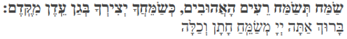
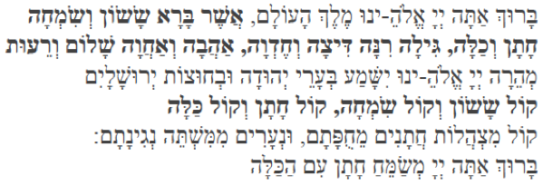

Jewish Wedding Rituals
We are so grateful that you are joining us in Tampa to celebrate our wedding! Below, we describe some of the Jewish rituals that will happen at our wedding. We envision a vibrant, energy-filled atmosphere with everyone participating, so we hope you’ll join us in the fun!
Tisch
Our wedding celebration will begin with a Tisch, Yiddish for table. We like to think of the tisch as a kind of pep-rally, to build excitement and energy for the main event. Traditionally, this part of the wedding celebration happens with the bride and groom in separate rooms, but we are doing it together. Everyone will gather in the Il Terrazzo room before the ceremony. Jonah and Amy—who will not have seen each other all day—will enter separately and meet in the middle of the room, as everyone sings traditional Jewish wedding songs (more on that below). Throughout the tisch, we invite everyone to sing and dance (and drink a little!) to create a raucous, joyful atmosphere. We have asked some friends and family to give us their blessings as we prepare for our ceremony. Jonah will give a short d’var Torah, word of Torah, but will be interrupted by singing, a tradition meant to make the bride and groom smile and calm their nerves.
Ketubah
At the end of the tisch, Jonah and Amy, along with two witnesses, will sign the ketubah, marriage contract, which details the promises we make to one another under the chuppah. Ours is an egalitarian ketubah, which emphasizes our joint commitment to love, respect, and support one another as re’im ahuvim, loving companions, throughout our lives. The original artwork was created by Rani Halpern, a family friend, and it will hang in our home.
Circling
After the tisch, we’ll head upstairs for the ceremony. After the processional, Jonah and Amy will circle each other seven times in silence. This choreography defines the sacred space that encompasses our marriage and sets this moment apart from all that preceded it.
Chuppah
The chuppah, the wedding canopy, represents the home that we will build together as a married couple. It is open on all sides to symbolize that our home will embody hospitality and openness and to remind us of our commitment to constant engagement with the broader community. As we stand under the chuppah, we will be surrounded by our parents and siblings, who taught us what it means to build a loving home and will continue to support us throughout our lives. The roof of our chuppah is a tallit, prayer shawl, that we bought together in Jerusalem and that Jonah will wear after we are married.
Rings
Our rings are a public symbol of our commitment to one another. We’ve chosen to depart from the traditional ritual, in which the ring represents the groom’s purchase of the bride. In our ceremony, we will exchange rings simultaneously to demonstrate that we are equal partners in our marriage.
Sheva Brachot
Traditionally, the bride and groom are showered with sheva brachot, seven blessings, under the chuppah and throughout their first week of marriage. The blessings reflect the joy of loving partnerships since the dawn of humanity. We have asked some of our friends and family to recite the traditional Hebrew blessings and modern English translations. We invite you to sing along during the 6th and 7th blessings.

Sameiach t’samach reim haAhuvim k’sameichakha y’tzirkha b’Gan Eiden mikedem. Barukh ata Adonai, m’sameiach chatan v’kalah

Barukh ata Adonai, Eloheinu melekh haOlam, asher bara sasson v’simcha, chatan v’kalah,
gilah, rinah,
ditzah v’chedvah,
ahavah v’achavah,
shalom v’reiut.
M’heira Adonai
Eloheinu yishama
b’arei Yehudah
uv’chutzot Yerushalayim kol sasson v’kol simcha
, kol chatan v’kol kalah
kol mitzhalot chatanim meichupatam une’arim mimishtei n’ginatam. Barukh ata Adonai, m’sameiach
chatan im hakalah.
Breaking the Glass
As the finale of the ceremony, we break a glass to remind us—even in the happiest of moments—of the continued brokenness of the world and our obligation as a couple to work toward its repair. As you hear the sound of the glass shatter, please shout “Mazel Tov!” to wish us good luck as we begin our marriage.
Immediately after, we ask everyone to sing Od Yishama (see below) and dance us from the chuppah to yichud, where we will spend our first moments together as a married couple.
Od yishama b'arei Yehudah, uv'chutzot Yerushalayim, kol sason v'kol simcha, kol chatan v'kol kalah!
(Note: We’ll sing the first version, which you can hear above under “Jewish Wedding Songs.”)
Hora & Schtick
The first dance of our reception will be the hora, a traditional Jewish celebratory dance. With high energy, clapping, and smiles, everyone will welcome us into the reception room for the first time as a married couple. Then, the hora will start! Join us on the dance floor, grab hands with a friend, and dance in circles to the music of Hava Nagila.
After a bit of dancing, we will be lifted in chairs (with the support of some strong people), a tradition to celebrate the bride and groom. Once we return safely to the ground, we’ll be seated at the edge of the dance floor for schtick, a Jewish tradition in which wedding guests entertain the bride and groom with dancing, costumes, jokes, goofiness, and silliness. It’s considered a mitzvah, or good deed, to make the bride and groom happy on their wedding day. So, bring your best moves, it’s going to be a blast!
Jewish Wedding Songs
These are some of the songs we might sing at the tisch. We will provide song sheets so everyone can sing along. Below are links to listen to if you want to get pumped!
Od Yishama
Perhaps the classic Jewish wedding song. The words of Od Yishama are found in the seventh of the Sheva Brachot (though originally they are from the book of Jeremiah):
Od yishama b'arei Yehudah, uv'chutzot Yerushalayim, kol sason v'kol simcha, kol chatan v'kol kalah!
Translated, it means: “Yet again there shall be heard in the cities of Judah, and in the streets of Jerusalem the voice of joy and the voice of gladness, the voice of the groom and the voice of the bride.”
There are several tunes to Od Yishama, but this one is the most popular, and the one we'd like people to sing after we break the glass (we like it at a bit of a brisker pace): (Click the play button to play)
Od Yishama
Here are two other versions you might hear:
Od Yishama Version 2
Od Yishama Version 3
Here are some other songs we might sing!
Siman Tov
Siman tov u'mazal tov yeheh lanu, u’lchol yisrael
Translation: May auspicious signs and good luck be with us and all of Israel
Yasis Alayich
Yasis alayich elohaich kimsos chatan al kallah
Translation: Your God shall rejoice over you, as a groom rejoices over his bride.
Yasis Alayich
Atah Takum
Atah Takum, t'rachem tziyon, ki et l'chenanah ki va moed
Translation: You shall arise, and have compassion upon Zion; for it is time to be gracious to her, for the appointed time has come.
Sameach
Sameach te'samach re’im ahuvim, k'samechacha yetzircha b'gan eden mi'kedem.
Translation: Let the loving couple be very happy, just as you made your creation happy in the garden of eden, so long ago.